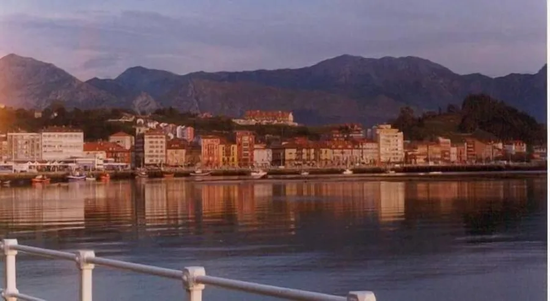

Mar
- Playa de Guadamía2 km
- Bufones de Príajunto a Guadamía
- Ribadesella y el Sella5 km
- Llanesmuy cerca
Con la mar brava, los bufones de Pría lanzan chorros de agua entre las rocas. Y por la ruta del río Guadamía se baja a la playa cruzando los puentes del Camino de Santiago, sin coger el coche.